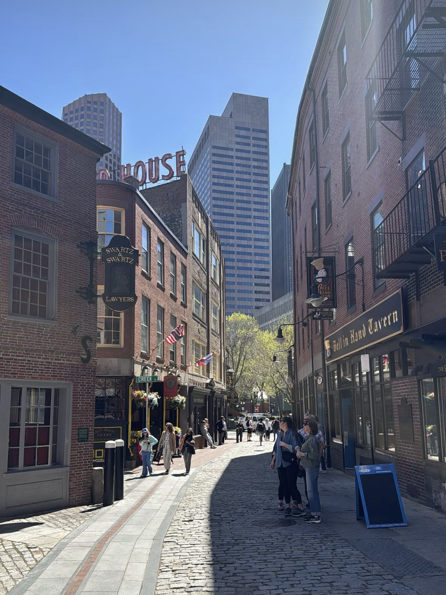
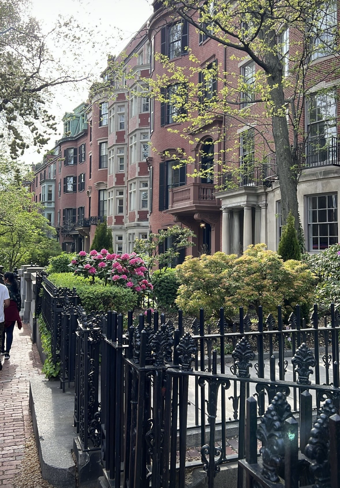
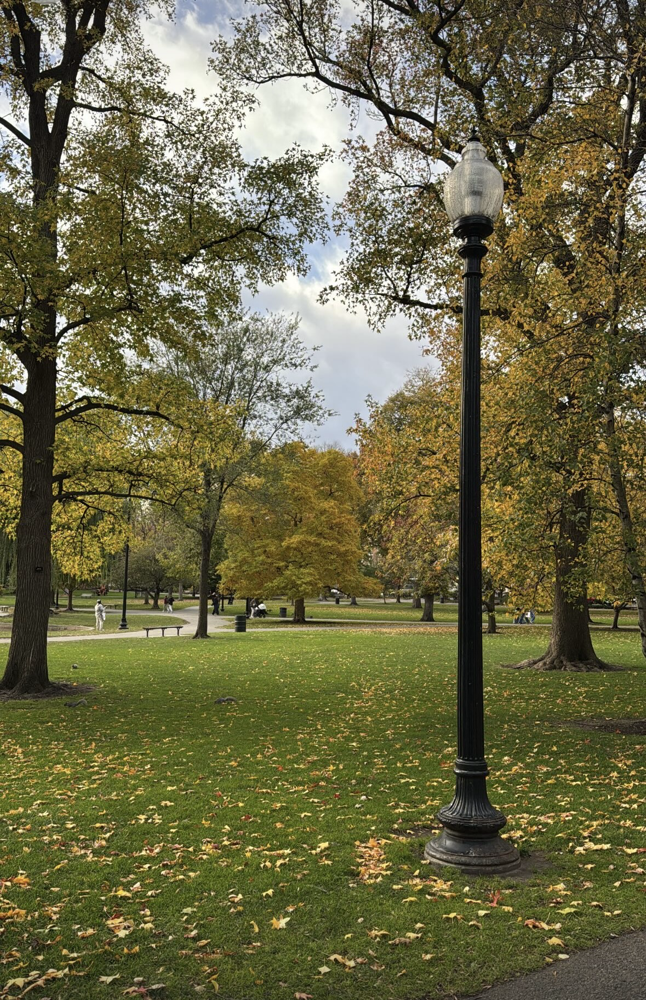

Little Italy
North End

Boston's oldest neighborhood and its Italian heart: about a square mile of narrow brick streets, close to a hundred restaurants and bakeries, and a long stretch of the Freedom Trail.
What to do
- Eat your way down Hanover Street, then finish with a cannoli from one of the pastry shops.
- Tour the Paul Revere House, built around 1680 and the oldest building in downtown Boston.
- Visit the Old North Church, where the lantern signal for Revere's midnight ride was hung.
- Walk up to Copp's Hill Burying Ground for a quiet view toward the harbor.
Beacon Hill
Beacon Hill

Gas lamps, brick sidewalks, and 19th-century row houses climbing the hill behind the State House. It's one of the best parts of the city to wander without a plan.
What to do
- Find Acorn Street, a steep cobblestone lane that's one of the most photographed streets in Boston.
- Browse the antique shops, boutiques, and cafés along Charles Street.
- See the gold dome of the Massachusetts State House at the top of the hill.
- Follow the Black Heritage Trail, which starts at the Museum of African American History.
Boston Public Garden
Back Bay

Founded in 1837 as the first public botanical garden in the country, it's a formal Victorian garden of flower beds, weeping willows, and a lagoon, right next to Boston Common.
What to do
- Ride the Swan Boats around the lagoon (seasonal, spring to early fall), run by the same family since 1877.
- Find the bronze Make Way for Ducklings statues, based on Robert McCloskey's children's book.
- Cross the footbridge over the lagoon for the best view of the garden.
- Keep walking west down the Commonwealth Avenue Mall or east across Boston Common.